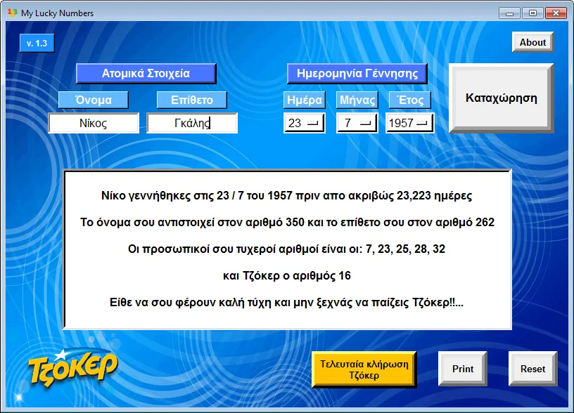

Πως μπορείς πραγματικά να αυξήσεις τις πιθανότητες σου να κερδίσεις το Τζόκερ ?
Σε αυτή τη σελίδα θα βρεις το εργαλείο που θα σε βοηθήσει να αυξήσεις τις πιθανότητες σου να κερδίσεις το Τζόκερ.
Για να πιάσεις το 5 + 1 στο Τζόκερ έχεις μία πιθανότητα στα 24.435.180. Δεν ακούγεται και πολύ ενθαρρυντικό αυτό ε? Τα νούμερα σου θα κληρωθούν στατιστικά σε 156.000 χρόνια αν συμμετέχεις και στις 3 εβδομαδιαίες κληρώσεις του ΟΠΑΠ. Επειδή ως γνωστόν ζούμε λίγο λιγότερο, κάτι πρέπει να κάνουμε γι' αυτό.
Η μόνη ίσως ελπίδα, για να βάλεις τον εαυτό σου στη λίστα των εκατομμυριούχων του Τζόκερ, σε αυτή την ζωή, είναι να παίζεις κάθε εβδομάδα, να μην παίζεις νούμερα σε σειρά που παίζουν και πολλοί άλλοι (π.χ 5, 10, 15, 20, 25), να μην παίζεις "γεωμετρικά" σχήματα (π.χ 1, 7, 13, 19, 25) που πάλι θα παίζουν πολλοί άλλοι και τέλος να παίζεις τα ίδια νούμερα σε κάθε κλήρωση.
Σε αυτό έρχεται να δώσει λύση το σκριπτάκι του άρθρου. Με βάση το ονοματεπώνυμο και την ημερομηνία γέννησης, σου βγάζει τους προσωπικούς σου τυχερούς αριθμούς που μπορείς να παίζεις μανιωδώς στα πρακτορεία του ΟΠΑΠ ή και online πλέον.
Ας δούμε για παράδειγμα τους τυχερούς αριθμούς του παλαιού θρύλου των γηπέδων, Νίκου Γκάλη. Αν έβαζε τα στοιχεία του στο πρόγραμμα, θα του έβγαζε την παρακάτω οθόνη.
Ο υπολογισμός των αριθμών εξηγείται αναλυτικά στο "About" της εφαρμογής, οπότε δεν θα κάνω εδώ μεγαλύτερη αναφορά. Σχετικά με τον κώδικα η όλη φάση ήταν ένα κολαστήριο. Συνολικά 9 module imports και 12 functions, χρειάστηκαν για να τρέχει ομαλά το πρόγραμμα. Όλα αυτά σε 351 γραμμές κώδικα όπου πολλές φορές χανόταν η μπάλα. Εκ του αποτελέσματος, όλα λειτουργούν όπως πρέπει και αυτή είναι η χαρά του κάθε προγραμματιστή.
Η λειτουργία του συγκεκριμένου script έχει πλέον ενσωματωθεί στην μεγάλη εφαρμογή του Τζόκερ, στο παράθυρο "οι τυχεροί σου αριθμοί". Μπορείς να κατεβάσεις ολόκληρο το πρόγραμμα για το Τζόκερ εδώ .
Αυτά και καλή μας τύχη!..